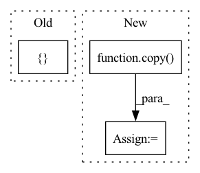

Pattern ID :13392

Before Change
diff_2[axis] = diff_2[axis] - 1
else:
print("Wrong mode")
return [diff_3, diff_2, diff_1]
def second_order_scheme_build(axes, varn, axes_mode):
After Change
diff_1 = copy(diff)
diff_2 = copy(diff)
diff_3 = copy(diff)
diff_4 = copy(diff)
if mode == "f":
diff_3[axis] = diff_3[axis] + 2
diff_2[axis] = diff_2[axis] + 1
elif mode == "b":
In pattern: SUPERPATTERN
Frequency: 3
Non-data size: 3
Instances
Fragment ID: 45142032
Project Name: itmo-nss-team/torch_de_solver
Commit Name: b768cebdd65d28dd933a9c668076107a57aa6a87
Time: 2022-01-25
Author: heretik.unlimited@gmail.com
File Name: finite_diffs.py
M Class Name: AnonimousClass
N Class Name: AnonimousClass
M Method Name: second_order_shift(3)
N Method Name: second_order_shift(3)
M Parent Class:
N Parent Class:
M File Name: finite_diffs.py
N File Name: finite_diffs.py
M Start Line: 263
M End Line: 274
N Start Line: 263
N End Line: 278
'>
Before Change
diff_2[axis] = diff_2[axis] - 1
else:
print("Wrong mode")
return [diff_3, diff_2, diff_1]
def second_order_scheme_build(axes, varn, axes_mode):
After Change
diff_1 = copy(diff)
diff_2 = copy(diff)
diff_3 = copy(diff)
diff_4 = copy(diff)
if mode == "f":
diff_3[axis] = diff_3[axis] + 2
diff_2[axis] = diff_2[axis] + 1
elif mode == "b":
diff_3[axis] = diff_3[axis] - 2
diff_2[axis] = diff_2[axis] - 1
elif mode=="central":
diff_4[axis] = diff_4[axis] + 2
diff_3[axis] = diff_3[axis] + 1
diff_2[axis] = diff_2[axis] - 1
diff_1[axis] = diff_1[axis] - 2
'>
Fragment ID: 45142034
Project Name: itmo-nss-team/torch_de_solver
Commit Name: 4b3ab52d5a4060ded9226df452b61282924d1c2d
Time: 2022-01-21
Author: heretik.unlimited@gmail.com
File Name: finite_diffs.py
M Class Name: AnonimousClass
N Class Name: AnonimousClass
M Method Name: second_order_shift(3)
N Method Name: second_order_shift(3)
M Parent Class:
N Parent Class:
M File Name: finite_diffs.py
N File Name: finite_diffs.py
M Start Line: 263
M End Line: 274
N Start Line: 263
N End Line: 278
'>
Before Change
num_threads,
)
pipeline_components: List[PipelineComponent]
pipeline_components = [predictor_pipe_component]
for _ in range(num_threads):
pipeline_components.append(copy(predictor_pipe_component))
After Change
for _ in range(num_threads - 1):
copy_pipe_component = copy(predictor_pipe_component)
copy_pipe_component.predictor = copy(tmp_predictor)
copy_pipe_component.predictor.tp_predictor = copy(tmp_tp_predictor)
copy_pipe_component.dp_manager = copy(tmp_dp_manager)
pipeline_components.append(copy_pipe_component)
predictor_pipe_component.dp_manager = tmp_dp_manager
'>
Fragment ID: 45142036
Project Name: deepdoctection/deepdoctection
Commit Name: f7f2ac859e2681a9a27fd8dd48ff0ae580398ae3
Time: 2021-12-20
Author: jm@drjanismeyer.de
File Name: deep_doctection/eval/eval.py
M Class Name: Evaluator
N Class Name: Evaluator
M Method Name: __init__(5)
N Method Name: __init__(5)
M Parent Class:
N Parent Class:
M File Name: deep_doctection/eval/eval.py
N File Name: deep_doctection/eval/eval.py
M Start Line: 73
M End Line: 77
N Start Line: 73
N End Line: 93